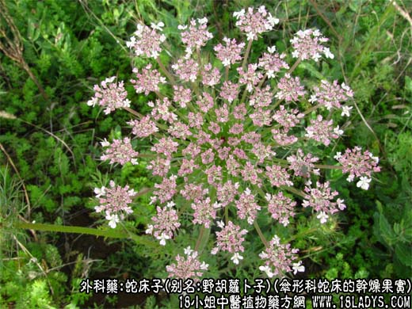
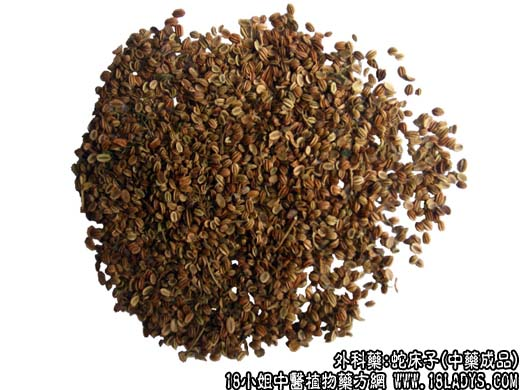
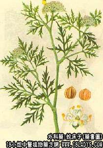

本品为较常用中药。始载《神农本草经》，列为上品。
来源：为伞形科蛇床的成熟干燥果实。均系野生。
产地：主产于华北、中南等地，其他各地均有野生。
植物形态：一年生草本。茎直立、中空、分枝，高30～80厘米，表面有纵沟纹、疏生白柔毛，基生叶有长柄，基部有短阔的叶鞘，叶片卵形，2～3回羽裂，最终裂片线状披针形；茎生叶柄较短。复伞形花序顶生或侧生，总苞片8～10枚线形，花色白，小型5瓣。双悬果椭圆形，分果各具翅状棱脊5条。花果期6～8月。
性状鉴别：双悬果椭圆形，由两个分果合成。长2～4毫米。直径1～2毫米。淡黄棕色淡黄绿色。顶端有残留花柱，基部偶有细果柄。每个分果的背面有翅状棱脊5条。接合面平坦，有两条棕褐色略凸起的油线，中央略凹入。果皮薄脆。果皮薄脆，搓之易拓，中含榄核种子1枚。具油性。气香，搓时更浓，味微辛、凉、苦。以果粒饱满，黄绿色，无枝叶混杂者为佳。
主要成分：含挥发油，其中主要成分为左旋蒎烯、樟脑烯，异戊酸龙脑脂，又含蛇床子素及香豆精类成分。
功效与作用：温肾助阳、燥湿杀虫。实验观察有以下作用：1、抗真菌。试管内对紫状皮表癣菌有抑制作用。
2、抗病毒。对鸡胚培养的新城病毒有一定抑制作用，对流感病毒有明显抑制作用。
3、驱虫。临床上用蛇床子提出物驱蛔虫，可使大便蛔虫卵阳性的患者转阴性。
4、类型激素作用。实验证明蛇床子能使正常的小白鼠延长交尾期，去势的小白鼠出现交尾期，有类性激素的作用。
5、抗滴虫。在显微镜下观察，滴虫当加入蛇床子激素后立即停止活动，用10%蛇床子膏后1分钟即止活动，而对照组则可活动1小时以上。但也有人观察到蛇床子提出物在体外并无杀灭阴道滴虫的作用。
炮制：生用。
性味：辛、苦、温。
归经：入肾经。
功能：补肾阳，散风寒，燥湿杀虫。
主治：阳痿、阴囊湿痒，带下阴痒，子宫寒冷不孕。外用熏洗疥癣湿疮皮炎湿疹等症。
临床应用：1、用于治疗皮肤湿疹和瘙痒症，如婴儿湿疹、慢性湿疹急性发作、汗疱疹糜烂期、阴囊湿疹、外阴瘙痒、疥疮、皮癣等。皮肤有分泌物渗出和发痒者，可用蛇床子煎水外洗，或用蛇床子30g、轻粉9g，研为细末，油调或凡士林调膏外搽，或用蛇床子油膏外搽，均有治疗效果。
2、用于治疗阴道滴虫，有阴道滴虫引起的外阴瘙痒，可用蛇床子30g，白矾6g，或再配紫苏叶30g，煎水外洗；也可用10%蛇床子液500毫升冲洗后，加用蛇床子阴道栓剂，有较好效果。
3、用于治疗肾虚、阳痿等病例。多配合巴戟天、淫羊藿、菟丝子等温肾助阳药物内服。
使用注意：本品性温，对有阴虚炒热者不宜用。
用量：外用适量，内服3～9g。
处方举例：蛇床子油膏：蛇床子30g，凡士林70g，调制成膏外用。